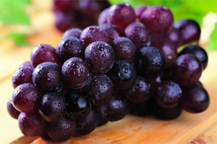

<!DOCTYPE html>
<html>

	<head>
		<meta charset="utf-8">
		<title>农事助手</title>
		<meta name="viewport" content="width=device-width, initial-scale=1,maximum-scale=1, user-scalable=no">
		<meta name="apple-mobile-web-app-capable" content="yes">
		<meta name="apple-mobile-web-app-status-bar-style" content="black">
		<link rel="stylesheet" href="../libs/css/mui.min.css">
		<link rel="stylesheet" href="../css/comm.css">
		<link rel="stylesheet" href="../css/search.css">
		<style type="text/css">
			.mbtenpx-list .mui-table-view-cell {
				padding-bottom: 12px;
			}
		</style>

	</head>

	<body>
		<div id="app">
			<index-view></index-view>
		</div>
		<script type="text/x-template" id="indexTpl">
			<div>
				<header class="mui-bar mui-bar-nav" id="header">
					<div class="mui-input-row mui-search search-box mui-pull-left" style="width: 85%;">
						<input type="search" class="mui-input-clear" placeholder="搜索">
					</div>
					<div class="mui-pull-right mui-action-back search-cancebtn">取消</div>
				</header>
				<div class="mui-content">
					<!-- 搜索结果常用 -->
					<div class="cylist">
						<h5>最常使用</h5>
						<ul class="mui-table-view mbtenpx-list">
							<li class="mui-table-view-cell mui-media">
								<a href="javascript:;">
									<div class="mui-row">
										<div class="mui-col-sm-12 mui-col-xs-12">
											
											<div class="mui-media-body">
												<div class="bfc">
													<span class="fruit-name fl" style="font-size: 16px;">新疆葡萄</span>
													<p class="fr">2017-10-27</p>
												</div>
												<p class='mui-ellipsis'>品种：<span class="blue-text">3号特级</span></p>
												<p class='mui-ellipsis bfc'>
													<span class="fl">生长时间：</span>
													<span class="fr">第12天</span>
												</p>
												<div class="green-line"></div>
											</div>
										</div>
									</div>
								</a>
							</li>
						</ul>
					</div>
					<!-- 搜索结构基地列表 -->
					<div class="base-list">
						<h5>基地</h5>
						<ul class="mui-table-view mbtenpx-list">
							<li class="mui-table-view-cell mui-media">
								<a href="javascript:;">
									<div class="mui-row">
										<div class="mui-col-sm-9 mui-col-xs-9">
											
											<div class="mui-media-body">
												<span class="fruit-name" style="font-size: 16px;">新疆葡萄</span>
												<p class='mui-ellipsis'>海拔：12111212km</p>
												<p class='mui-ellipsis'>经纬度：120.45,70.25</p>
												<p class='mui-ellipsis'>降水：66660 m/l | 温差 20</p>
											</div>
										</div>
										<div class="mui-col-sm-3 mui-col-xs-3 right">
											<div class="mui-pull-right">
												<p class='mui-ellipsis base-area'>36亩</p>
											</div>
										</div>
									</div>
								</a>
							</li>
						</ul>
					</div>
				</div>
			</div>
		</script>
		<script src="../libs/js/mui.min.js"></script>
		<script src="../libs/js/vue.min.js"></script>
		<script type="text/javascript">
			// 列表组件
			var indexView = {
				template: indexTpl,
				data: function() {
					return {
						message: 'indexTpl'
					}
				},
				mounted: function() {
					console.log('in')
				},
				methods: {}
			}
			// 实例
			var vm = new Vue({
				el: '#app',
				data: {
					message: 'Hello Vue!',
				},
				components: {
					'indexView': indexView,
				}
			});
		</script>
		<script src="../js/immersed.js"></script>
	</body>

</html>